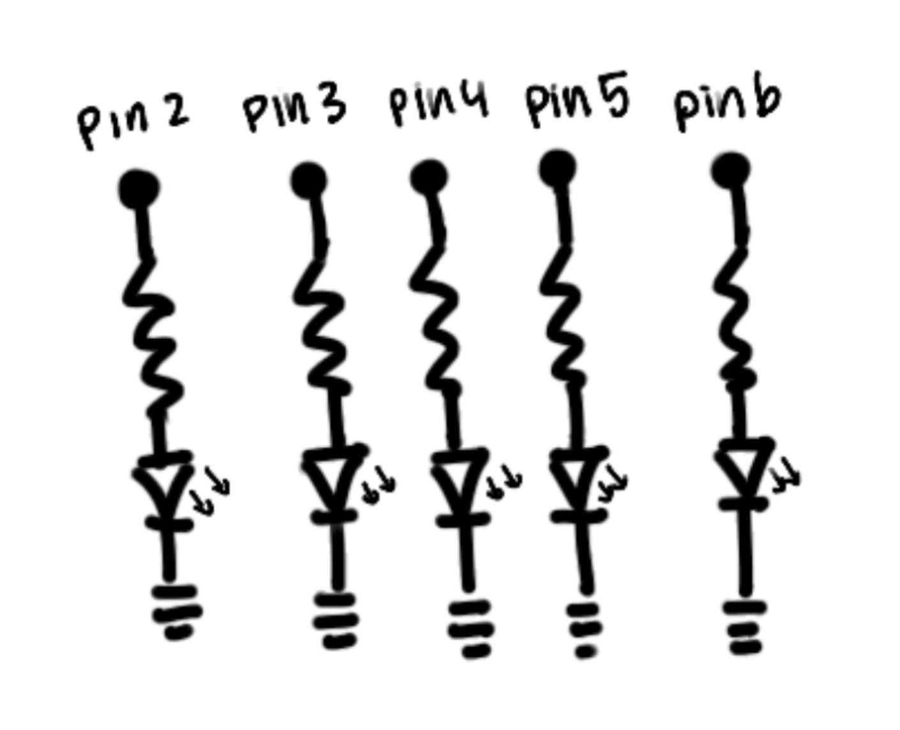
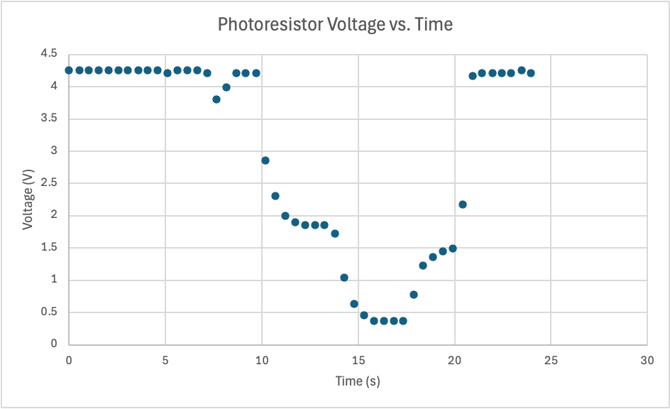

Schematic

A photoresistor and 4.7kΩ resistor form a voltage divider connected to A0 on the Arduino. The Arduino reads the voltage, maps it to a light percentage, and sends it to the LCD panel to display the value and a status message (“Dark,”, "Dim", & “Bright”). The 4.7kΩ resistor was chosen to match the photoresistor’s typical resistance at moderate light for a mid-range voltage (~2.5V) for better analog readings. A 220Ω potentiometer is used to adjust the LCD contrast.
Circuit

The photoresistor and 4.7kΩ resistor are connected in series on a breadboard. The junction goes to A0 on the Arduino. The LCD panel is wired connected with a 220Ω potentiometer connected to pin 3 (VO) for contrast. Arduino reads the voltage, maps it to 0–100% light level, and displays it on the LCD.
Code
/*
A3 Input Output! - Photoresistor + LCD display
By Anita Daniel
*/
// include LiquidCrystal library to control the LCD
#include
// LCD pin connections
const int rs = 12; // Register select pin
const int en = 11; // Enable pin
const int d4 = 5; // Data pin 4
const int d5 = 4; // Data pin 5
const int d6 = 3; // Data pin 6
const int d7 = 2; // Data pin 7
// initialize LCD object with pin connections
LiquidCrystal lcd(rs, en, d4, d5, d6, d7);
int photoPin = A0; // analog pin connected to voltage divider with the photoresistor
int sensorValue; // store raw analog reading (0–1023)
int lightPercent; // store mapped light percentage (0–100)
void setup() {
// initialize LCD object with the pin connections
lcd.begin(16, 2);
// initialize serial communication at 9600 baud
Serial.begin(9600);
// display message on LCD
lcd.print("Light Sensor");
}
void loop() {
// read voltage from photoresistor voltage divider (0–1023)
sensorValue = analogRead(photoPin);
lightPercent = map(sensorValue, 0, 1023, 0, 100);
// Map raw analog reading to a 0–100% scale
// clear LCD screen
lcd.clear();
// set cursor to first column, first row
lcd.setCursor(0, 0);
// print light percentage
lcd.print("Light: ");
lcd.print(lightPercent);
lcd.print("%");
// set cursor to first column, second row
lcd.setCursor(0, 1);
if (lightPercent < 30) {
lcd.print("Status: Dark"); // if light is under 30% it's dark
} else if (lightPercent < 60) {
lcd.print("Status: Dim"); // if light is between 30% and 60% it's dim
} else {
lcd.print("Status: Bright"); // if light >= 60% it's bright
}
// print raw analog value and mapped light percentage
Serial.print("Sensor: ");
Serial.print(sensorValue);
Serial.print(" Light: ");
Serial.print(lightPercent);
Serial.println("%");
// 0.5 seconds before next
delay(500);
}
Circuit Operation
Video Link: https://drive.google.com/file/d/1ZfHGOEVSnaziAQLGm83ENPiIHHydKbgc/view?usp=sharing
As light increases, the photoresistor’s resistance decreases, increasing the voltage. Arduino reads this voltage, maps it to 0–100% light level, and updates the LCD with the light percentage and status.
Questions
1: In your voltage divider, can the variable resistor be either R1 or R2 or does it need to be one or the other? Justify your answer with example calculations.
The variable resistor can be either R1 or R2, but the behavior of the voltage divider will differ based on which resistor is variable.
In a voltage divider, the variable resistor can be either R1 or R2. The position determines how the output voltage behaves: if the variable resistor is R1 (the top resistor), the output voltage decreases as the resistance decreases, or as light increases for a photoresistor. If the variable resistor is R2 (the bottom resistor), the output voltage increases as resistance increases. In our experiment, the photoresistor was R1, so as it got brighter and its resistance decreased, the output voltage went down, which matches theoretical expectations..
2: Draw a graph where the x-axis is time and the y-axis is voltage. Plot the voltage at V-measure (where your pin is reading the voltage) of your voltage divider of your shared gif/video.

X-axis: Time (seconds) | Y-axis: Voltage at Vout (from voltage divider) | Voltage decreases as light rises.
3: AnalogWrite and analogRead are respectively 8-bit and 10-bit values. Imagine you had 10-bit PWM and a 16-bit analog-to-digital converter instead. How would this change your map() code? Explain your answer.
If analogWrite were 10-bit and analogRead were 16-bit, the input range would be 0 to 65535 and the output range would be 0 to 1023. The map function would need to scale these ranges, like map(inputValue, 0, 65535, 0, 1023). This ensures the full input range is correctly converted to the full output range, just like with the original 10-bit to 8-bit mapping.